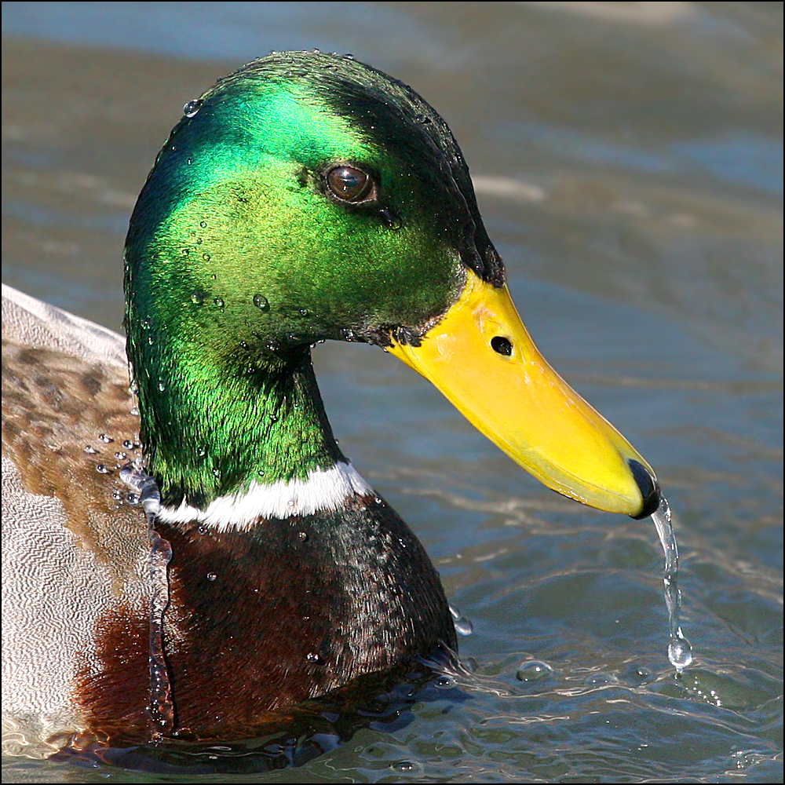

When the device's pixel ratio increases, the image will change from a duck, to a balloon, to a dog. This can be used to scale an image, but in this example will remove the image with a different one.
Note: When scaling backwards, the viewport is remembered by Chrome. To show the right image, go into Dev Tools, hold Shift then right-click the refresh button, then click "Empty Cache and Hard Reload".
In all browsers, in order to get a viewport of 1x, 2x and 3x, zooming needs to be done to 100%, 200% and 300% respectively.
